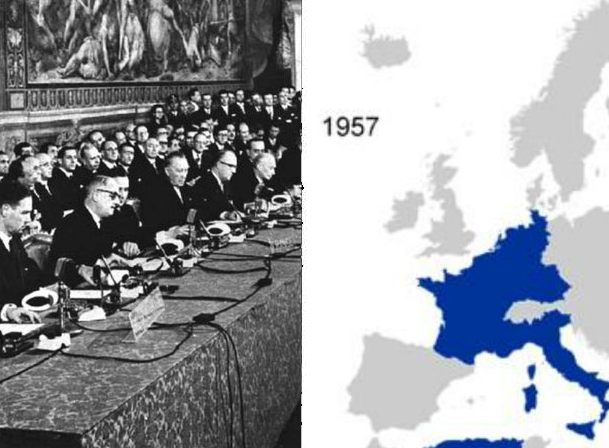

|
En 1942, les Américains, une partie des Alliés, arrivent en Algérie où la France reconstitue son armée. En 1943, l’Italie est envahie par les Américains, les Anglais et les Français. La Corse est libérée. Les Russes obligent les allemands à capituler à Stalingrad. La guerre continue malgré tout en Europe, en Afrique et en Asie. En 1944, l’Angleterre et l’ Amérique organisent un débarquement en Normandie (France). Peu à peu, ils réussissent à libérer l’Europe des Allemands et de la dictature nazie. |
Le 25 août 1944, Paris est libéré grâce à l’armée et à la Résistance.
En 1945, les Russes et les Anglais entrent en Allemagne. Le 30 avril, Hitler se suicide ainsi que sa femme et le 8 mai, l’Allemagne capitule.
Les Américains continuent de détruire la flotte japonaise qui résiste et ne veut pas se rendre. Les Américains décident alors d’utiliser la bombe atomique.
Le 6 août 1945, une bombe est lâchée sur Hiroshima puis deux jours plus tard sur Nagasaki. Il y aura 150 000 victimes.
Le 2 septembre 1945, le Japon capitule.
La Seconde Guerre mondiale aura fait plus de 60 millions de victimes, dont de nombreux civils. C’est la guerre de l’horreur.
Le 6 juin 1944, les forces alliées débarquent enfin sur la côte normande entre Cherbourg et Le Havre. Ils parviennent à franchir le mur de l'Atlantique protégé par les Allemands. En août, une autre armée alliée entre par le sud entre Toulon (Toulon) et Marseille.
Les forces des Alliés découvrent les camps de concentration et les responsables Allemands seront jugés puis condamnés à mort et exécutés.
| L’Organisation des Nations Unies (ONU) est créée pour sauvegarder la paix en 1945. ONU |
En 1957, l’Allemagne, la France, les Pays-Bas, la Belgique, l’Italie et le Luxembourg signent le Traité de Rome pour former la Communauté Economique Européenne (CEE) mais surtout pour éviter de futures guerres.  |


{kind=link}
{kind=link}
{kind=link}
{kind=link}
{kind=link}